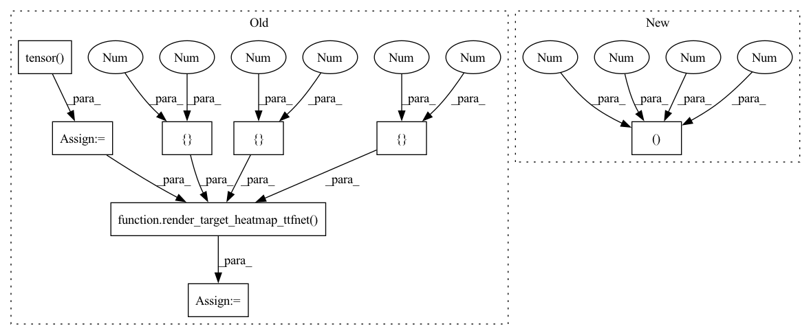

Pattern ID :5127

Before Change
def test_render_target_heatmap(self):
centers = torch.tensor([[10,10], [20,30], [14,30]])
sizes = torch.tensor([[10,10], [10,20], [30,30]])
indices = torch.tensor([1,0,2])
mask = torch.tensor([1,1,0])
heatmap = render_target_heatmap_ttfnet(self.HEATMAP_SHAPE, centers, sizes, indices, mask)
assert heatmap[indices,centers[:,1],centers[:,0]].sum() == mask.sum() // peak is 1 if mask == 1
assert torch.sum(heatmap == 1) == mask.sum() // correct number of peaks
After Change
labels = torch.tensor([[1,0,2]])
mask = torch.tensor([[1,1,0]])
heatmap = render_target_heatmap_ttfnet((1,3,128,128), bboxes, labels, mask)
assert heatmap[0, labels[0][0], bboxes[0][0][1], bboxes[0][0][0]] == 1 // peak is 1
assert torch.sum(heatmap == 1) == mask.sum() // correct number of peaks
In pattern: SUPERPATTERN
Frequency: 3
Non-data size: 8
Instances
Fragment ID: 18029842
Project Name: gau-nernst/centernet-lightning
Commit Name: bde713dbf016e3c26a00307e27cc9eca629776de
Time: 2021-06-19
Author: gau.nernst@yahoo.com.sg
File Name: losses_test.py
M Class Name: TestLosses
N Class Name: TestLosses
M Method Name: test_render_target_heatmap(1)
N Method Name: test_render_target_heatmap(1)
M Parent Class:
N Parent Class:
M File Name: losses_test.py
N File Name: losses_test.py
M Start Line: 10
M End Line: 17
N Start Line: 6
N End Line: 22
'>
Before Change
output_probs = torch.sigmoid(sample_output)
centers = torch.tensor([[10,10], [20,30], [14,30]])
sizes = torch.tensor([[10,10], [10,20], [30,30]])
indices = torch.tensor([1,0,2])
mask = torch.tensor([1,1,0])
sample_target = render_target_heatmap_ttfnet(self.HEATMAP_SHAPE, centers, sizes, indices, mask)
focal_loss = FocalLossWithLogits(alpha=2, beta=4)
loss1 = focal_loss(sample_output, sample_target)
loss2 = reference_focal_loss(output_probs, sample_target)
After Change
assert torch.sum(heatmap == 1) == mask.sum() // correct number of peaks
def test_focal_loss(self):
sample_output = torch.rand((1,3,128,128))*10 - 5
output_probs = torch.sigmoid(sample_output)
bboxes = torch.tensor([[
'>
Fragment ID: 18029841
Project Name: gau-nernst/centernet-lightning
Commit Name: bde713dbf016e3c26a00307e27cc9eca629776de
Time: 2021-06-19
Author: gau.nernst@yahoo.com.sg
File Name: losses_test.py
M Class Name: TestLosses
N Class Name: TestLosses
M Method Name: test_focal_loss(1)
N Method Name: test_focal_loss(1)
M Parent Class:
N Parent Class:
M File Name: losses_test.py
N File Name: losses_test.py
M Start Line: 21
M End Line: 29
N Start Line: 25
N End Line: 36
'>
Before Change
assert not torch.isnan(losses[x])
def test_decode_detections(self):
centers = torch.tensor([[10,10], [20,30]])
sizes = torch.tensor([[10,10], [10,20]])
indices = torch.tensor([1,0])
mask = torch.tensor([1,1])
x1 = centers[0][0]
y1 = centers[0][1]
heatmap = render_target_heatmap_ttfnet((4,128,128), centers, sizes, indices, mask) * 0.95
heatmap[indices[0],y1,x1] = 1 // make the first point having highest score
heatmap = -torch.log((1 - heatmap) / (heatmap + 1e-8)) // inverse sigmoid, convert probabilities to logits
After Change
x1 = bboxes[0][0][0]
y1 = bboxes[0][0][1]
heatmap = render_target_heatmap_cornernet((1,4,128,128), bboxes, labels, mask) * 0.95
heatmap[0, labels[0][0], y1, x1] = 1 // make the first point having highest score
heatmap = -torch.log((1 - heatmap) / (heatmap + 1e-8)) // inverse sigmoid, convert probabilities to logits
'>
Fragment ID: 18029584
Project Name: gau-nernst/centernet-lightning
Commit Name: bde713dbf016e3c26a00307e27cc9eca629776de
Time: 2021-06-19
Author: gau.nernst@yahoo.com.sg
File Name: model_test.py
M Class Name: TestModels
N Class Name: TestModels
M Method Name: test_decode_detections(1)
N Method Name: test_decode_detections(1)
M Parent Class:
N Parent Class:
M File Name: model_test.py
N File Name: model_test.py
M Start Line: 50
M End Line: 82
N Start Line: 58
N End Line: 93